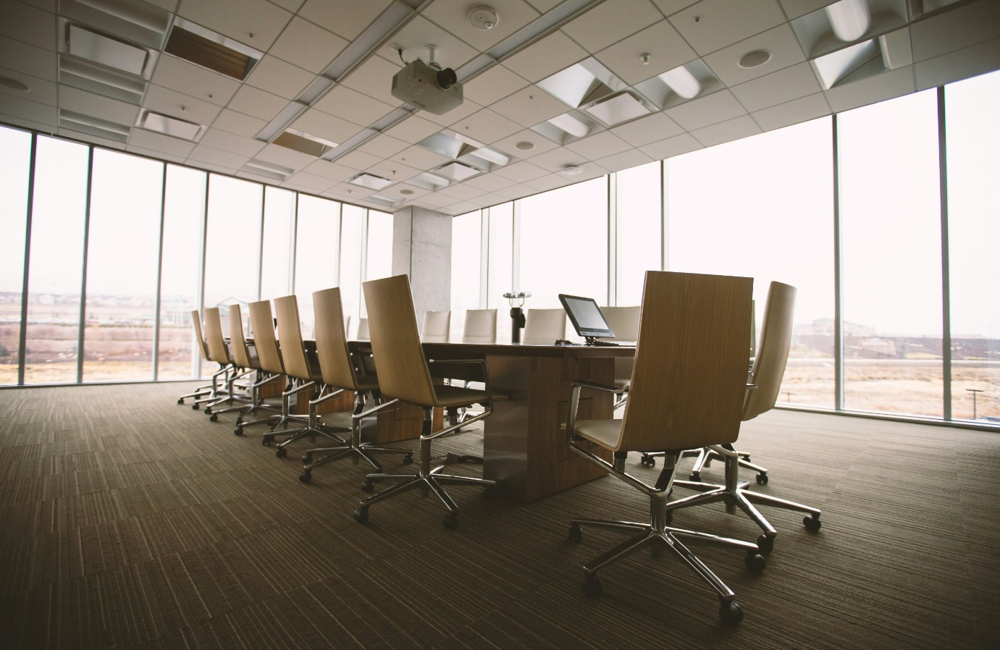
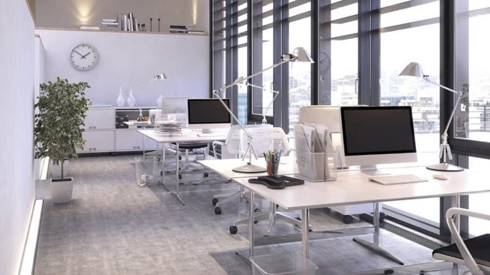
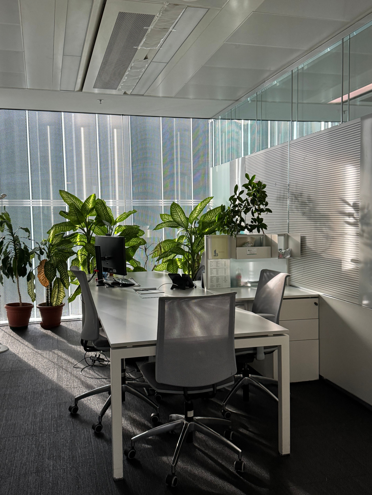

Sala Mayor
Oficina espaciosa para 20 personas, con proyector y pantalla para presentaciones profesionales

Oficina espaciosa para 20 personas, con proyector y pantalla para presentaciones profesionales

Oficina luminosa con hasta 6 escritorios individuales

Espacios para trabajar en equipo, compartir ideas y desarrollar tus proyectos en un ambiente cómodo.
